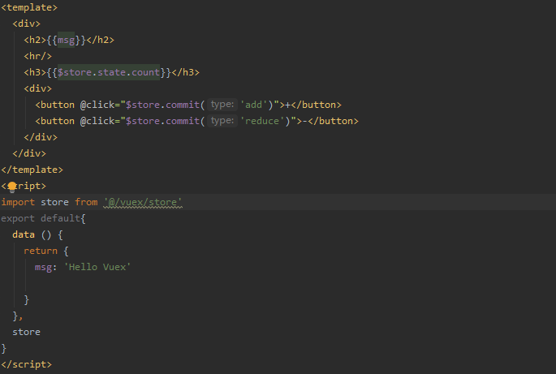
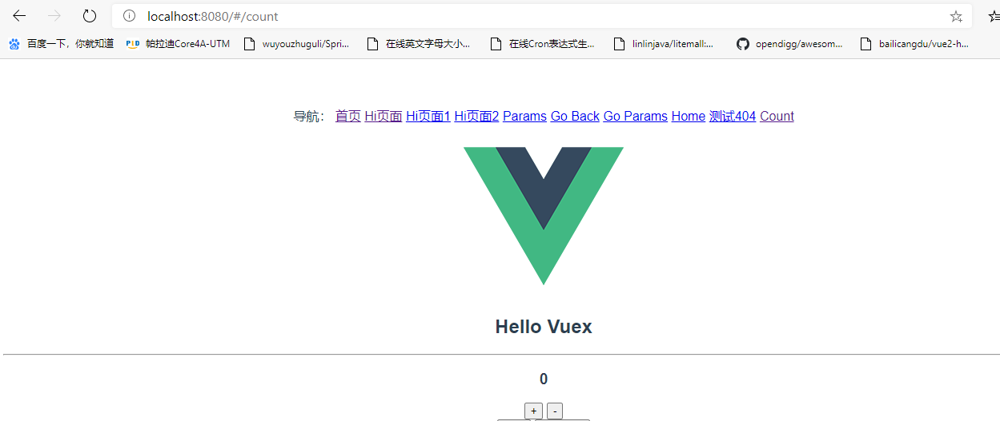

引入vuex
- 1. 利用npm包管理工具，进行安装 vuex。在控制命令行中输入下边的命令就可以了。
npm install vuex --save
需要注意的是这里一定要加上 –save，因为你这个包我们在生产环境中是要使用的。
- 2. 新建一个vuex文件夹（这个不是必须的），并在文件夹下新建store.js文件，文件中引入我们的vue和vuex。
import Vue from 'vue';
import Vuex from 'vuex';
- 3. 使用我们vuex，引入之后用Vue.use进行引用。
Vue.use(Vuex);
通过这三步的操作，vuex就算引用成功了，接下来我们就可以尽情的玩耍了。
接下来我们来玩一个小案例
我们这个小案例先声明一个state的count状态，在页面中使用显示这个count，然后可以利用按钮进行加减。
- 1. 现在我们store.js文件里增加一个常量对象。store.js文件就是我们在引入vuex时的那个文件。
const state={
count:1
}
- 2. 用export default 封装代码，让外部可以引用。
export default new Vuex.Store({
state
})
- 3. 新建一个vue的模板，位置在components文件夹下，名字叫count.vue。在模板中我们引入我们刚建的store.js文件，
并在模板中用$store.state.count输出count 的值。

- 4. 在store.js文件中加入两个改变state的方法。
const mutations = {
add: (state) => {
state.count++
},
reduce: (state) => {
state.count--
}
}
export default new Vuex.Store({
state,
mutations
})
这里的mutations是固定的写法，意思是改变的，我们后面会学习mutations，所以你先不用着急，只要知道我们改变state的数值的方法，
必须写在mutations里就可以了。
- 5. 在count.vue模板中加入两个按钮，并调用mutations中的方法。
{{message}}
{{message01}}
下面我们在app.vue 文件中加一个导航来预览，就可以看到效果了。效果图如下：
